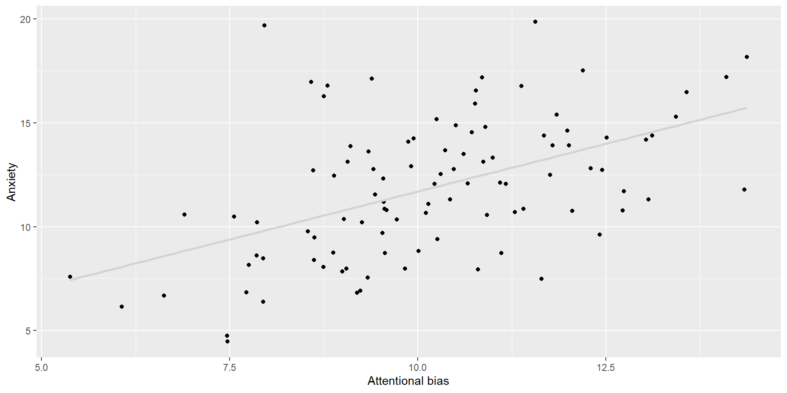
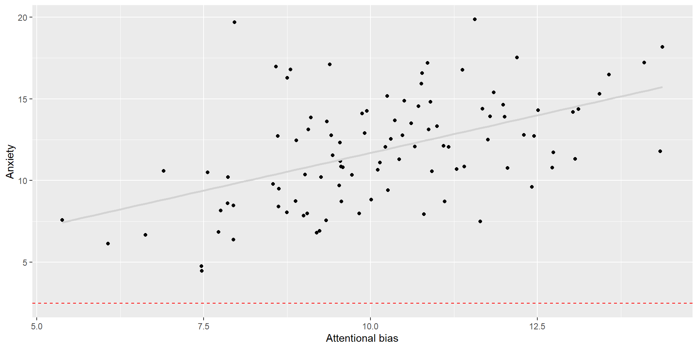
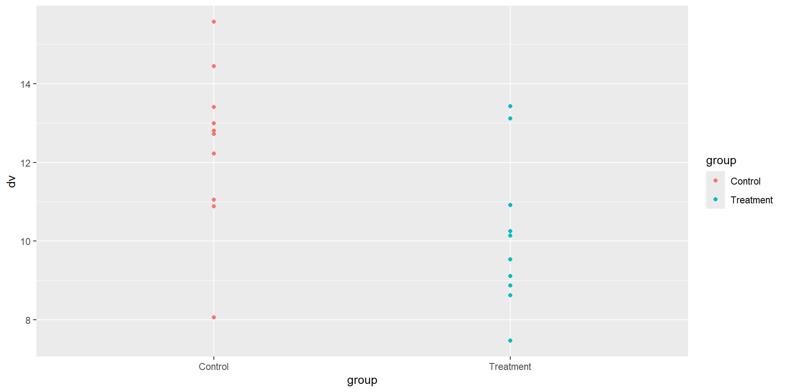
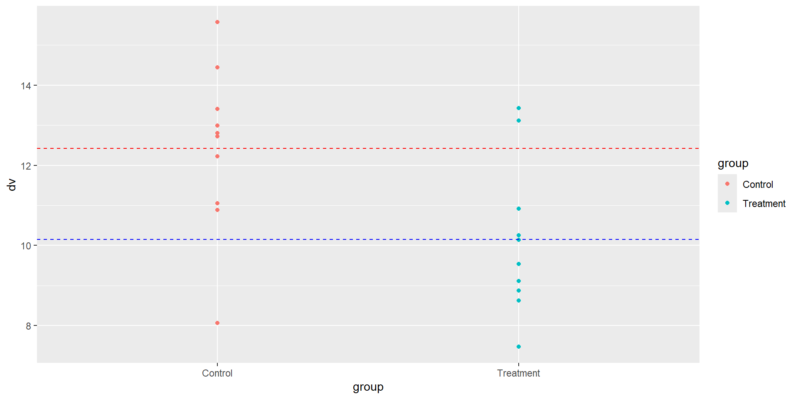
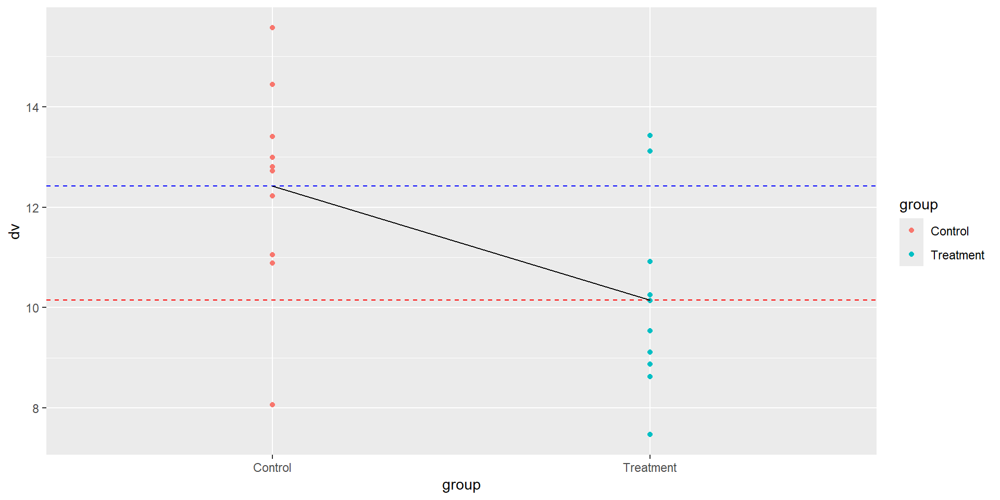

- 1
-
The
lm() function is used for linear regression. The model is specified using the formula y ~ x, where y is the outcome variable and x is the predictor variable. - 2
-
The
summary() function is used to get a summary of the model. This includes the intercept and slope values, the standard errors, the t-values, and the p-values.
Hypothesis testing with linear models
DClin Research Methods 1
Dr Christopher Wilson
Teesside University
Key points from Lecture 1:
Generate research questions based on where the current literature is
Incorporate the current theoretical models that explain your phenomenon of interest
Some topics need more on the “What?” but many need more on the “How?” - build from wherever current knowledge is and design your study accordingly.
Transparency and open science practices (e.g., registration) can prod you to clarify these points before you begin data collection.
Key points from Lecture 2:
Statistical significance is an indicator of confidence that if the null hypothesis were true, we would be unlikely to find such a result.
The importance of statistical significance is often overstated in that it does not:
Confirm that our alternative hypothesis is true
Mean that our result is clinically meaningful
The importance of statistical significance is often understated in that:
There is no such thing as a “near significant” result - alpha thresholds (p values) are decided in advance
Studies need to be designed with sufficient power (i.e., sample size) to detect the effect of interest
The reliability of significant results depends on the analysis being applied correctly (e.g., test assumptions)
Key points from Lecture 2 (cont.):
When designing studies, we need to understand the effect we are looking for and run power analysis
When designing studies, we need to decide how best to assess the data to test our hypothesis/es
When analysing the data, we need to look at it in detail, not just take a “cookier cutter” approach
Suggested reading:
The Eight Steps of Data Analysis: A Graphical Framework to Promote Sound Statistical Analysis
Overview
- Hypothesis testing
- Linear models
- Linear models in R
Different types of research hypothesis
Hypothesis testing is a method for making inferences about a population based on a sample
In clinical psychology research, for example, we might be interested in the role of attentional bias in anxiety
Different types of research hypothesis
However, we need to phrase this in terms of a hypothesis that we can test:
- There is a difference in attentional bias between anxious and non-anxious individuals
- There is a difference in attentional bias between anxious and non-anxious individuals, but only for threat-related stimuli
- Level of anxiety predicts level of attentional bias to threat-related stimuli
- Level of anxiety moderates the relationship between attentional bias and depression
Hypothesis influences research design
The nature of these hypotheses will determine the design of the study, the variables that are measured, and the statistical analysis that is used
In many cases people come to analyse their data and find it difficult to know which statistical test to use
This is not necessarily because of a lack of statistical knowledge
Different analyses for different designs?
Psych students are often taught to use different statistical tests for different types of designs. For example:
- t-test for comparing two groups
- ANOVA for comparing more than two groups
- Correlation for testing the relationship between two continuous variables
- Regression for testing the relationship between a continuous and a categorical variable
- ANCOVA for testing the relationship between a continuous and a categorical variable, controlling for a third continuous variable
All of the previous examples are based on regression
Think about your questions before you think about the stats
The role of attentional bias in anxiety
Let’s assume we have several variables:
Age, Gender
Stimulus level: Threatening / Non-threatening
Anxiety Score
Attentional bias (based on reaction times)
How do we analyse the data?
In the coming weeks, we will see how taking a modelling approach allows us to answer the questions we want, rather than designing questions to fit a set of tests.
Linear models using continuous predictor variables
Linear regression
- The regression line is the line of best fit through the data (smallest amount of overall error between the line and the data points)
Residuals

- The distances between the data points and the regression line are the residuals
But what is the null hypothesis in regression?
The null hypothesis in regression
The null hypothesis is that the line of best fit is no better at predicting the y variable than the mean of the y variable when the x variable = 0
In other words, the null hypothesis is that the slope of the line of best fit is 0
Looking at regression output
Looking at regression output
Call:
lm(formula = y ~ x, data = df)
Residuals:
Min 1Q Median 3Q Max
-5.7220 -2.0505 -0.2625 1.7419 9.8712
Coefficients:
Estimate Std. Error t value Pr(>|t|)
(Intercept) 2.4787 1.6579 1.495 0.138
x 0.9213 0.1603 5.747 1.03e-07 ***
---
Signif. codes: 0 '***' 0.001 '**' 0.01 '*' 0.05 '.' 0.1 ' ' 1
Residual standard error: 2.912 on 98 degrees of freedom
Multiple R-squared: 0.252, Adjusted R-squared: 0.2444
F-statistic: 33.02 on 1 and 98 DF, p-value: 1.029e-07What if we have a categorical predictor variable?
Example: t-test
- A t-test is a special case of a linear model where there is one predictor variable (group) and one outcome variable (DV)
Welch Two Sample t-test
data: dv by group
t = 2.5438, df = 17.872, p-value = 0.02044
alternative hypothesis: true difference in means between group Control and group Treatment is not equal to 0
95 percent confidence interval:
0.3938876 4.1420977
sample estimates:
mean in group Control mean in group Treatment
12.41724 10.14925 Plotting the data #1
Here we can see the data for each group
Plotting the data #2
Here we can see the mean for each group, represented by the dashed lines
Plotting the data #3
In a regression model, the intercept is the mean of one of the groups, and the slope is the difference between the means of the two groups
Example: t-test as a linear model
Call:
lm(formula = dv ~ group, data = df)
Residuals:
Min 1Q Median 3Q Max
-4.3505 -1.2934 0.0505 0.8258 3.2809
Coefficients:
Estimate Std. Error t value Pr(>|t|)
(Intercept) 12.4172 0.6304 19.696 1.25e-13 ***
groupTreatment -2.2680 0.8916 -2.544 0.0204 *
---
Signif. codes: 0 '***' 0.001 '**' 0.01 '*' 0.05 '.' 0.1 ' ' 1
Residual standard error: 1.994 on 18 degrees of freedom
Multiple R-squared: 0.2644, Adjusted R-squared: 0.2236
F-statistic: 6.471 on 1 and 18 DF, p-value: 0.02036- In the above example, the t-test and linear model give the same results. The intercept for the linear model is the mean of the Control Group, and the slope is the difference between the means of group Control and Treatment.
We can check the confidence intervals from the regression model
# show the confidence confidence intervals of the coefficients
lm(dv ~ group, data = df) |> confint() 2.5 % 97.5 %
(Intercept) 11.092729 13.7417583
groupTreatment -4.141139 -0.3948464- We can see that the confidence interval of the regression coefficient is the same as the confidence interval of the difference between means in the t-test
What’s the value of using this approach?
Advantages of using models
Using models allows us to test a wide range of hypotheses using the same approach
This means that we can use the same approach to test hypotheses about:
- the relationship between two continuous variables
- the relationship between a categorical predictor and continuous outcome
- Continuous and categorical predictors in the same model
We can use this approach regardless of the number of predictor variables or levels in a categorical predictor
ANOVA as regression
One-way ANOVA
Df Sum Sq Mean Sq F value Pr(>F)
group 2 48.97 24.486 6.435 0.00518 **
Residuals 27 102.73 3.805
---
Signif. codes: 0 '***' 0.001 '**' 0.01 '*' 0.05 '.' 0.1 ' ' 1In this example, we can see that there is a significant effect of group on the outcome variable. However, we do not know which groups are significantly different from each other.
ANOVA as regression
Call:
lm(formula = dv ~ group, data = df)
Residuals:
Min 1Q Median 3Q Max
-4.3505 -1.2824 -0.1021 0.9322 3.3567
Coefficients:
Estimate Std. Error t value Pr(>|t|)
(Intercept) 10.1493 0.6168 16.454 1.34e-15 ***
groupGroup 2 2.2680 0.8723 2.600 0.0149 *
groupGroup 3 3.0016 0.8723 3.441 0.0019 **
---
Signif. codes: 0 '***' 0.001 '**' 0.01 '*' 0.05 '.' 0.1 ' ' 1
Residual standard error: 1.951 on 27 degrees of freedom
Multiple R-squared: 0.3228, Adjusted R-squared: 0.2727
F-statistic: 6.435 on 2 and 27 DF, p-value: 0.005183In this example, we can see that there is a significant effect of group on the outcome variable. However, we can also see:
- that Group 2 and Group 3 are significantly different from Group 1.
- the exact difference between the means of each group
What about non-linear relationships?
Not all relationships between variables are linear
For example, the relationship between age and cognitive functioning is often non-linear
In these cases, we can use other approaches (e.g., polynomial regression) to test the relationship
What about non-linear relationships? #2
- Once you become confident with the idea of modelling the relationships between variables, you can apply different types of model, based on what fits the data
Fit is an important concept in modelling. For example, to test a binary outcome (e.g., Yes/No), we would use logistic regresssion, because this type of model fits the data better.
There are also ways to model data to fit non-linear relationships for continuous data
We are starting with the linear model, since all of the alternative approaches you know (e.g., t-test, ANOVA etc.) are based on a linear model.
How do we know if a linear model is appropriate?
You need to check the assumptions of linear models when using them to test hypotheses
These assumptions are:
- Linearity
- Independence
- Homoscedasticity
- Normality
Many of these assumptions can be checked using the residuals of the model. If you are using R, the
plot() function can be used to check these assumptions. We will learn another method next week
Summary
Many different types of hypothesis can be tested using regression models
This can allow us to ask questions that are more complex because we can include multiple predictor variables in the same model (next week)
We can get more information from a regression output than from a t-test or ANOVA (for example)
However, we need to check the assumptions of linear models before reporting them